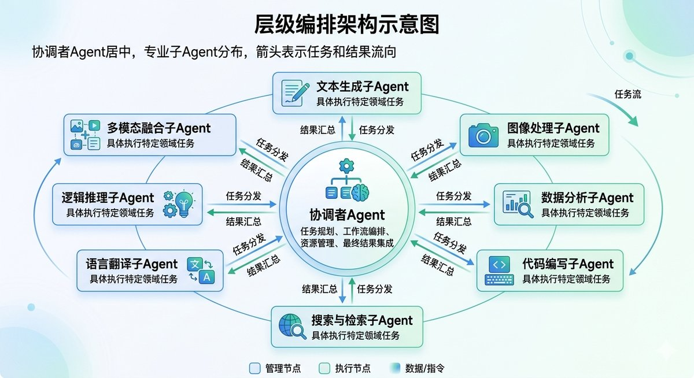

2026年6月13日，Salesforce夏季版本全面上线，核心卖点只有一个：Multi-Agent Orchestration，多智能体编排。Salesforce CEO Marc Benioff管它叫"智能体企业（Agentic Enterprise）的操作系统"。同一周，Google的ADK（Agent Development Kit）发布了2.0版本，支持Python、TypeScript、Go、Java四种语言，把多Agent协作作为框架的原生设计目标。
如果你觉得这两个新闻只是大厂在追同一个热点，你只看到了表象。它们指向的是同一个转折点——2026年，AI工程的焦点已经从"怎样做出更聪明的单个Agent"，转向了"怎样让一群Agent高效协作"。
过去一年里，如果你打开过CrewAI的文档、读过来自OpenAI的Agents SDK发布公告、或者看过Google那篇A2A协议的论文，你应该已经感觉到了这股暗流。但我猜多数人的困惑是一样的：多Agent到底是一个真实的生产力范式，还是框架厂商为了让你升级技术栈而编出来的故事？五个主流框架（LangGraph、CrewAI、AutoGen、OpenAI Agents SDK、Google ADK）到底该怎么选？A2A和MCP这两个协议到底解决了什么、又没解决什么？
这篇文章会回答这些问题。它不是一篇框架文档的翻译，而是一份架构选型决策指南。读完你会知道：在什么场景下应该用多Agent而不是单Agent，哪个框架匹配你的工程需求，以及从原型到生产需要跨过哪些坑。
单Agent的边界：你什么时候真的需要多个Agent？
在讨论多Agent之前，你得先搞清楚单Agent到底卡在哪里。不是每个AI应用都需要多Agent——实际上，根据TowardsAgenticAI在2026年对数百个生产环境部署的分析，超过60%的财富500强公司已经在某种程度上使用了多Agent系统，但其中大量团队的共识是：从两层架构开始，不要一开始就建一个复杂的层级化Agent网络。
单Agent系统的三个致命瓶颈是真实存在的。
第一个是上下文窗口枯竭。当你让一个Agent同时处理意图识别、知识检索、数据查询、工单生成和跨部门协同时，它的上下文窗口里塞满了系统提示、工具定义、对话历史和中间结果。简单的任务也许能跑通，但一旦涉及长链路推理，模型就开始"遗忘"早期的指令。这和你打开30个Chrome标签页之后找不到最初那个页面的体验完全相同。
第二个是专业化与通用化的不可能三角。一个全科医生可以处理大部分常见病，但遇到心脏问题还是得转给心内科。Agent同理。一个通用Agent在客服、代码审查、合同分析这些截然不同的任务上"都能做"，但每一项都做不到专业Agent的水准。问题是，企业级场景里，"及格"和"优秀"的差距直接对应营收损失或合规风险。
第三个是串行瓶颈。单Agent处理复杂工作流时，每个步骤必须等上一个完成。Genentech在2025年部署多Agent系统之前，用单Agent做药物研发实验设计，一个实验方案的设计周期是六周。这是串行处理的物理极限——文档提取、验证、审批路由、支付调度全部排队执行。换成多Agent后，这个周期缩短到三天，准确率保持在94%。
那么，什么情况下你确实不应该用多Agent？一个简单的判断标准：如果你的任务可以被一个不超过2000字的系统提示完整描述，且不涉及跨领域专业知识的切换，单Agent就够了。多Agent的价值在任务需要"分解"和"协作"时才会出现——说白了，当你的任务描述里出现了"同时""然后交给""需要审核"这类协作语义时，才值得引入多Agent。
四种架构模式：多Agent系统的"设计语言"
多Agent系统没有一种万能架构。但过去两年的工程实践沉淀出了四种被反复验证的模式。你可以把它们理解为多Agent世界的"设计模式"——不是每种都适合你，但你应该全部认识。
模式一：层级编排（Hierarchical Orchestrator）
这是目前生产环境里最常见的模式。一个协调者Agent（Supervisor/Orchestrator）负责接收任务、分解子任务、分发给专业Agent、汇总结果。专业Agent彼此不直接通信，所有协调都经过协调者。
这个模式的代表实现是LangGraph的Supervisor模式、CrewAI的层级流程和Google ADK的sub_agents机制。它的优势是结构清晰、易于调试——你只需要追踪协调者的路由决策就知道问题出在哪。风险也很明显：协调者是单点故障，一旦它的任务分解出错，整个链路都会跑偏。
一个典型的应用场景是Lyft在2025年用LangGraph构建的客服多Agent系统。它用一个路由Agent判断用户意图（叫车问题、支付问题还是账户问题），然后分发给对应的子Agent处理。这个架构让Lyft的Agent开发周期从六个月缩短到几周——因为运营团队可以直接用自然语言定义每个子Agent的行为，而不需要机器学习工程师介入每一轮迭代。

模式二：对等协作（Peer-to-Peer）
没有中央协调者。每个Agent自主决策、互相通信、动态协商任务分配。想象一个分布式系统中的多个节点——每个节点都有独立的决策能力和通信能力。
这种模式最典型的使用场景是实时优化系统，比如车队调度、网络流量管理。每个Agent代表一个物理实体（一辆车、一个网络节点），它们根据局部信息做出决策，同时通过通信协议同步全局状态。优势是没有单点瓶颈，容错性高。但调试这种系统是一场噩梦——你要面对的是"一群独立决策的Agent在什么条件下会产生群体性错误行为"这种复杂系统问题。
目前生产环境中纯对等模式的应用不多，更多的是"带协调者的对等模式"——即有一个轻量级的协调层负责全局状态聚合，但子Agent之间也可以直接通信。
模式三：市场协调（Marketplace Coordination）
这种模式来自多Agent系统学术研究中的"合同网协议"（Contract Net Protocol）思想。Agent以"招标-投标-授标"的方式分配任务：一个Agent发布任务需求，多个Agent根据自身能力提交竞标，发布者选择最优方案并授标。
市场模式特别适合资源分配和调度场景。比如一个多Agent采购系统：采购Agent发标"需要1000台服务器，预算500万，两周内交付"，供应商Agent A、B、C各自投标报价，采购Agent综合评估后选择最优组合。
微软的AutoGen框架对这种模式有天然支持，它的GroupChat机制本质上就是一种"会议室竞标"——多个Agent在群聊中各自表达意见，最后由一个"讲者选择器"（Speaker Selector）决定谁来执行下一步。
模式四：群聊编排（Group Chat Orchestration）
这是AutoGen的核心设计理念。所有Agent处于同一个"群聊"中，消息广播给所有人，由一个选择器决定下一个发言的Agent。这种模式最接近人类团队的会议协作——大家在一个房间里讨论，互相补充、互相质疑。
群聊模式在需要多视角论证的任务上表现很好。比如代码审查、战略分析、论文审稿——你能从Agent之间的辩论中获得比单一Agent输出质量高得多的结果。根据MarkCijo在2025年基于多个生产项目的实测，AutoGen的对话式群聊在代码审查和研究分析等场景下输出质量更高，但其Token消耗是串行执行的3到5倍——因为每个Agent都要完整参与对话历史。
这四种模式不是互斥的。生产系统中常见的是混合使用：顶层用层级编排做任务路由，中间层用对等协作做并行处理，底层用群聊模式做质量审核。
A2A和MCP：多Agent世界的"HTTP"和"USB-C"
聊完架构，必须聊协议。因为多Agent协作如果只能在同一个框架内进行，天花板太低了。真正让2026年成为"Agent协议之年"的，是两套正在重新定义Agent互操作性的开放标准。
MCP：连接Agent和工具的通用接口
MCP（Model Context Protocol）由Anthropic在2024年底推出，现在已移交Linux基金会治理。你可以把它理解为"AI世界的USB-C"——一套标准化的工具注册、发现和调用协议。
在MCP出现之前，每个Agent框架都有自己的工具调用格式。你为LangChain写的数据库查询工具，换到AutoGen上就得重写一遍。MCP的意义在于：工具提供方（MCP Server）只需实现一次，所有支持MCP的AI客户端都能直接调用。
截至2026年6月，MCP的生态数据是这样的：月SDK下载量超过9700万，官方MCP Server数量突破2000个，覆盖数据库、云服务、DevOps、设计工具等各领域。主流框架——LangChain、CrewAI、Semantic Kernel、Spring AI——全部内置了MCP支持。Google在Vertex AI上推出了托管MCP服务，微软在2026年5月宣布Copilot平台全面支持MCP。
但MCP不是没有争议的。2026年4月，云安全联盟发布了一份研究报告，指出MCP的STDIO传输模式存在一个设计层面的远程代码执行风险——任何传递给MCP STDIO接口的进程命令都会在主机系统上执行，不管它是否初始化了有效的MCP Server。Anthropic确认这是有意为之的设计选择。社区因此爆发了一场"用Bash还是用MCP"的争论，核心观点是：MCP把工具调用封装在协议层后面，让开发者失去了复现Agent行为的能力。但从生态角度看，标准化的收益压过了抽象层的摩擦成本。
A2A：让Agent像Web服务器一样互联
如果说MCP解决的是Agent→工具的连接问题，那Google在2025年4月推出的A2A（Agent-to-Agent）协议解决的就是Agent→Agent的协作问题。它被称为"智能体互联网的HTTP"。
A2A的核心设计基于三个洞察。第一，Agent不共享内存——每个Agent有独立的上下文和工作空间。第二，企业级Agent的任务可能需要分钟甚至小时级完成，不能假设同步调用。第三，Agent需要一种标准化的方式向其他Agent声明自己的能力。
A2A引入了Agent Card（智能体名片）的概念——一个标准化的JSON描述文件，相当于Agent的"身份证+简历"，包含协议版本、身份ID、能力列表、服务地址和认证方式。一个Agent通过访问另一个Agent的Well-Known URI（https://domain/.well-known/agent.json）就能发现它的全部能力，然后像调用API一样发起任务。
A2A的底层传输用的是HTTP和JSON-RPC 2.0，支持三种交互模式：同步请求/响应（适合短任务）、SSE流式传输（适合长文本生成）、Webhook推送通知（适合耗时计算）。安全机制方面，支持API Key、OAuth2、mTLS和DID/VC等多种认证方式。
到2026年Q2，A2A已发布v0.2.5稳定版，150多家组织支持，Google、微软、AWS三家云厂商全部深度集成。微软在2026年5月宣布其Copilot平台全面支持A2A，意味着企业可以在Microsoft 365生态中自由编排来自不同厂商的Agent。
MCP + A2A：完整的Agent协议栈
理解这两个协议最简洁的方式是记住一句话：MCP是Agent的手和脚（调用工具、访问数据），A2A是Agent的嘴和耳朵（相互通信、协商协作）。两者组合成了完整的Agent协议栈。
一个真实的多Agent系统通常会同时用到两者：Agent通过MCP调用数据库、文件系统和第三方API；通过A2A与其他Agent交换任务、同步状态。Salesforce在2026年夏季版本中发布的Tableau MCP就是一个典型应用——它是MCP Server，让Agent能直接查询Tableau的分析引擎，同时这些Agent通过Agentforce的Multi-Agent Orchestration（内在逻辑类似A2A的协作模式）来协调客服、销售和数据分析等不同职能。
框架选型：五个主流方案的真实对比
框架选型可能是你在多Agent项目上做出的最重要的技术决策。选错了，要么是"杀鸡用牛刀"——工程复杂度远超需求；要么是"牛刀不够锋利"——框架的能力上限在项目中期成为瓶颈。
在讨论具体框架之前，先说一个2026年选型时必须知道的事实：AutoGen已经进入了维护模式。微软研究院的AutoGen项目在2025年底停止了新功能开发，v0.7.5（2025年9月发布）是最后一个有实质性更新的版本。AutoGen的GitHub仓库明确声明不再接收新特性或增强，推荐开发者迁移到Microsoft Agent Framework（MAF）。AutoGen目前仍有58000个GitHub Star，但如果你是2026年开始的新项目，选AutoGen唯一合理的理由是你有一个现成的AutoGen代码库需要维护。
下面是对四个活跃框架的逐项分析。
LangGraph：为"可控性"生的框架
LangGraph在2025年10月发布了1.0正式版，截至2026年6月有约32000个GitHub Star。它是LangChain生态的一部分，支持Python和JavaScript。
LangGraph的核心设计理念是"把Agent应用建模为有向状态图"。你定义State（共享状态对象），定义Node（执行具体任务的节点/Agent），定义Edge（节点之间的路由规则）。每个Agent从共享State读取输入，修改后写回State，LangGraph负责状态持久化和变化传播。
这种设计带来的最大优势是精确的执行控制。你可以显式定义"当分析完成且置信度大于0.8时进入生成阶段，否则回到审查阶段"这种复杂的条件分支。每个状态转换都是可追踪的，每步决策都是可审计的。在受监管行业（金融、医疗），这种透明度是刚需。
LangGraph有三个不可替代的能力。第一是持久化检查点（Checkpointing）：开发环境用MemorySaver，生产环境必须用PostgresSaver。它让Agent在任意节点失败后可以从最近的成功检查点恢复，而不是从头重跑。这对于需要几十分钟甚至几小时的长链路任务来说，意味着成本的量级差异。第二是人机协同中断（Human-in-the-Loop）：你可以在任意图节点插入interrupt()，让人类决策者在关键环节审批或修改状态后再继续执行。涉及退款、合同签署等敏感操作时，这个能力决定了一个系统能不能上生产。第三是LangSmith可观测性：完整的执行追踪、延迟分析、Token用量统计和LLM-as-judge评估体系。
LangGraph的短板也很明显。学习曲线是所有框架里最陡的——你需要理解状态图理论、Reducer逻辑、检查点机制和LangChain的抽象层。开发时间是CrewAI的2到3倍。代码冗长度高——相同功能，LangGraph实现的行数通常是CrewAI的1.5到2倍。而且它和LangChain生态绑定较深，如果你不用LangChain，LangGraph的优势会打折扣。
适合的场景：生产环境中需要精确流程控制、严格审计追踪和复杂状态管理的企业级应用。典型用户包括Lyft（用LangGraph构建了客服多Agent平台）和Salesforce、HubSpot等企业。
CrewAI：最快从想法到原型的框架
CrewAI在2026年有约51000个GitHub Star，v1.14左右。它是目前社区采用率最高的多Agent框架之一，哲学是"用角色模拟团队协作"——你定义Agent的role、goal、backstory，把它们组装成一个Crew，配上Tasks，Agent们自动协作完成。
CrewAI的杀手锏是开发速度。一个研究员+撰写员+审核员的三人内容生产流水线，从零到可运行原型通常只需要3到5天。它的抽象层把Agent之间的通信、任务委派、上下文传递全部封装好了，你不用关心底层实现细节。
CrewAI在2026年加入了两个重要的架构扩展：Flows和A2A支持。Flows让CrewAI从"角色扮演"扩展到事件驱动的工作流场景——你可以在需要精确条件分支的地方用Flows，在需要Agent自主决策的地方用Crews。A2A协议支持意味着CrewAI的Agent现在可以和Google ADK、OpenAI Agents SDK等其他框架的Agent互操作。
但CrewAI的弱点也来自它的强抽象。当Agent出现非预期行为——比如一个Agent在循环中反复调用同一个工具、或者委派了错误的任务——高层的角色抽象让你很难快速定位根因。它是"快速上车、难以修车"的典型。此外，当Agent数量超过5到6个时性能会明显下降，对动态工作流（运行时需要改变Agent拓扑结构）支持有限。
适合的场景：需要快速验证想法、或者任务结构相对固定的中型项目。内容生产、销售线索处理、客服分流等场景是CrewAI的甜蜜点。
OpenAI Agents SDK：最轻量的多Agent方案
OpenAI在2025年3月发布了Agents SDK，截至2026年6月有约27000个GitHub Star，月PyPI下载量约3000万。它是OpenAI取代Assistants API的官方方案——Assistants API计划在2026年中完全退役。
Agents SDK的核心理念是"最少的抽象，最高的可控性"。它只提供四个核心原语：Agent（配置了指令和工具的LLM）、Runner（执行循环，处理工具调用和历史管理）、Handoff（Agent之间的任务委派，自动传递对话上下文）和Guardrail（输入/输出校验，与Agent执行并行运行）。没有图定义、没有YAML配置、没有抽象工作流引擎。你用普通Python的if/else、循环和函数调用来编排多Agent逻辑。
Handoff是Agents SDK最亮眼的功能。你定义一个"接待Agent"负责用户意图识别，定义"账单Agent"和"技术支持Agent"分别处理对应领域。当接待Agent判断用户问题是账单相关时，只需一行handoff声明，Runner就会自动把完整对话历史转交给账单Agent。这是最接近"人类团队接力"的Agent协作范式。
Agents SDK还内置了开箱即用的追踪系统——每一次Agent运行、工具调用、护栏检查和任务委派都自动记录在OpenAI Dashboard中。如果你已经在用OpenAI的模型和基础设施，这个追踪系统可以省掉集成第三方可观测性工具的工程成本。2026年4月的更新还加入了Sandbox Agents——Agent可以在隔离的工作空间中读写文件、执行代码、跨文件操作，进一步向"能在工程现场干活的Agent"靠拢。
但Agents SDK的限制也需要正视。它的最佳体验深度绑定OpenAI模型——虽然理论上支持任何兼容的API，但追踪、结构化输出和流式优化的最佳表现都在OpenAI端点。它不支持复杂的循环图或条件分支——你需要自己在Python代码里实现这些逻辑。如果你的系统需要持久化状态和复杂的检查点/恢复机制，LangGraph更合适。
适合的场景：已经使用OpenAI API的团队，需要快速构建多Agent系统但不想要框架的复杂抽象层。客服分流、多步骤数据处理等场景。
Google ADK：自带"图工作流"的全栈方案
Google ADK在2026年4月发布了2.0版本，从热度的增长曲线来看，它是2026年上半年增长最快的Agent框架之一。ADK的设计与众不同之处在于它同时支持两种编排范式：一方面你可以用sub_agents机制实现层级式多Agent（类似于CrewAI的角色模型），另一方面你可以在2.0版本中直接定义基于图的工作流，其抽象程度介于CrewAI和LangGraph之间。
ADK定义了两大类Agent：LlmAgent（LLM驱动的智能Agent）和WorkflowAgent（确定性的流程控制Agent）。WorkflowAgent又分为SequentialAgent（顺序执行）、ParallelAgent（并行执行）和LoopAgent（循环执行）。这个分类体系让ADK既能处理"让Agent自主推理和决策"的场景，也能处理"需要确定性地按步骤执行"的场景。
ADK的另一个独特优势是多语言支持——Python、TypeScript、Go、Java四种语言都有官方SDK。对于需要在不同技术栈之间统一Agent开发范式的组织来说，这个覆盖面很有价值。同时ADK原生支持A2A协议，这意味着它天然能和CrewAI、OpenAI Agents SDK等其他框架的Agent互操作。
ADK深度集成了Google的云生态——Vertex AI、Cloud Run、Gemini模型都是第一优先级支持的。如果你的基础设施在Google Cloud上，ADK能帮你省掉大量集成工作。但它对Google生态的依赖也是一把双刃剑：脱离Google Cloud使用ADK虽然可行，但体验会明显下降。
适合的场景：Google Cloud用户、需要多语言Agent开发支持的组织、需要在"LLM驱动"和"确定性流程"之间灵活切换的项目。
选型决策矩阵
选框架不是比谁的Star多，是比谁的设计哲学匹配你的工程约束。下面这个矩阵帮你快速缩小范围。
如果你最关心从想法到原型的速度，选CrewAI。3到5天就能有一个可运行的多Agent系统，而且它的角色抽象对非技术人员友好——运营团队可以直接参与Agent行为定义。
如果你最关心生产环境的流程可控性和可审计性，选LangGraph。它给你的不是便利，是精确的控制力——每一个状态转换、每一次决策路由都在你的掌控之下。
如果你最关心技术栈的简洁性，选OpenAI Agents SDK。它只有四个概念，没有图定义、没有YAML配置、不需要学一套新的DSL。代价是复杂流程需要你自己用Python代码编排。
如果你在Google Cloud上或者需要多语言支持，选Google ADK。它和Vertex AI的集成是其他框架做不到的，Python/TS/Go/Java四语言覆盖也是独一份。
一个常见的错误是"先选框架后选场景"。正确的顺序是：先定义你的Agent协作拓扑——是线性的还是分支的、是需要精确路由还是自主协商、是需要同步还是异步——然后根据拓扑特征选框架。大多数生产级系统实际上会混合使用多个框架的模式，比如用CrewAI的角色模型做Agent定义、用LangGraph的图模型做流程控制。
生产落地的四个核心问题
框架选完，更大的挑战才开始。根据Gartner 2026年的研究，只有11%到14%的企业AI Agent试点项目达到了规模化生产，86%到89%没有产生可持续的价值。这个失败率告诉你：多Agent系统从"Demo能跑"到"生产能扛"，中间需要填的坑比你以为的多得多。
问题一：状态管理——你的Agent记不住事情
单Agent的上下文管理已经够麻烦了，多Agent的上下文管理是麻烦的平方。五个Agent，每个有自己的对话历史、中间结果和工具调用记录。当第六个Agent被委派了一个需要前面五个Agent上下文才能执行的任务时，你怎么办？
LangGraph的解决方案是最工程化的：用PostgresSaver做分布式检查点存储。每个节点执行完成后，完整的State通过Reducer逻辑写入PostgreSQL。任何一个Agent崩溃、超时或返回异常结果，系统可以回滚到上一个成功检查点，换一条路径继续执行，不需要从头开始。
在生产环境中使用检查点有两条铁律。第一，开发环境可以用MemorySaver，但生产环境必须用PostgresSaver——内存里的状态会随着进程重启而丢失。第二，State的Schema设计要遵守"最小必要原则"：只放跨Agent共享的关键信息（用户意图、任务ID、中间决策结果），不要把每个Agent的全部对话历史都写进State。Lyft的客服多Agent系统就是一个典型案例——它用LangGraph的State管理在不同子Agent之间传递用户身份、会话上下文和路由决策，避免了每次Agent切换时用户需要重新提供信息。
问题二：成本控制——Token消耗是单Agent的3到10倍
这是一个多Agent系统绕不开的话题。AutoGen的群聊模式，Token消耗是串行执行的3到5倍。一个有五个Agent的CrewAI系统，每个Agent都有完整的系统提示、工具定义和对话历史，一次任务的总Token消耗轻松过万。如果你的Agent用GPT-4或Claude Opus这种高成本模型，一次任务的成本可能超过两美元。
成本优化的核心策略是"模型分级调度"。不是每个Agent都需要用最贵、最强的模型。简单任务——意图分类、格式校验、关键词提取——用GPT-4o-mini、Claude Haiku甚至本地的7B量级模型就够了，成本只有旗舰模型的十分之一到十六分之一。只有核心推理、复杂决策、创意生成这些"硬骨头"才需要主模型出马。
上海交通大学和上海AI实验室在2026年5月发表的一篇论文提出了一个叫AgentSlimming的框架，专门用于压缩多Agent工作流。他们的做法是在不显著影响性能的前提下，剪枝掉冗余Agent节点，或者用低成本模型替换高成本模型的Agent节点。实验结果显示，Token成本平均降低了78.9%，而且有些场景下准确率反而提升了——因为去掉了产生噪音的冗余Agent。
另一个常被忽略的成本优化手段是MCP工具按需加载。Anthropic的研究发现，在一个包含5个MCP服务器和34个工具的典型部署中，平均每回合约45000个Token的输入中，有50%只是工具模式的开销。如果你的Agent一开始就加载了全部34个工具的定义，其中28个在这一轮对话中根本不会用到。Hermes Agent引入的"Tool Search"机制是一个参考方案——Agent不预加载所有工具，而是先通过三个桥接工具按需检索、描述、调用。这个设计让Claude Opus 4的工具调用准确率从49%提升到了74%。
问题三：人机协同——你不能让Agent替你做所有决定
这是多Agent系统从Demo到生产的最大分水岭。一个能自动处理退款、自动签署合同、自动发送客户数据的系统，如果出错了，是谁的责任？
人机协同（Human-in-the-Loop）不是简单的"在执行前弹个确认框"。它需要在Agent工作流的任意节点支持"暂停-审查-继续/修改/拒绝"的操作。LangGraph的interrupt()函数是目前最成熟的实现：你可以在图上的任何节点插入中断，等人类操作者审批后再继续。CrewAI支持task级别的人类输入检查点。OpenAI Agents SDK通过Guardrail机制提供输入/输出校验。
Salesforce即将在2026年6月上线的Multi-Agent Orchestration中集成了一个关键特性：所有Agent操作都在Trust Layer下运行，涉及敏感数据或决策的步骤会被自动标记为需要人类审批。而且这个审批流程不需要切换到另一个系统——它在同一个Agent对话界面中完成。
问题四：可观测性——当五个Agent都不按预期运行时
单Agent系统出问题时，你至少能看到"它在哪一步做错了决定"。五个Agent协作时，问题就像多米诺骨牌——Agent A的错误输出被Agent B当作正确输入处理，Agent B基于错误数据进行推理，Agent C在错误信息的基础上生成了最终答案。等你发现结果不对时，你面对的是五个Agent的完整执行链条，每个环节都有可能是根因。
解决这个问题的关键是端到端追踪。LangChain的LangSmith、OpenAI的内置Tracing、CrewAI的AMP Pro、Google Cloud的Cloud Trace都提供了Agent级别的执行追踪。但工具只是基础——你需要建立一套多Agent系统的调试方法论。
一个被多次实战验证的方法是从最终输出反向追踪。当你发现最终结果异常时，从最后一个Agent的输出开始检查，然后检查它的输入——这些输入来自哪个Agent的输出？那个Agent的输入又是什么？一层层回溯，直到找到第一个产生异常输出的Agent。如果你有LangGraph式的检查点机制，这个过程会快很多——你可以直接回放到任何一个中间状态，不需要从头重新执行。
Lyft的实践给出了一个重要教训：在多Agent系统中，Prompt质量比基础设施更关键。他们在搭建客服多Agent平台时发现，Agent可靠性的最大瓶颈不是框架本身，而是Prompt的结构化程度。一个写得好的Prompt（明确界定Agent的职责边界、输出格式和异常处理方式）能减少80%的非预期行为。
你应该做的三件事
读完这篇文章，如果多Agent系统和你的工作有关，下面三件事是今天就能开始的。
第一，用"两层架构"做一个最小的多Agent原型。选你正在用的框架（CrewAI最快，OpenAI Agents SDK最轻，LangGraph最可控），设计一个协调者加两个专业子Agent的最简系统。目标不是做出一个完美的产品，而是获得多Agent协作的第一手经验——你会亲身体验到上下文传递比你以为的脆弱、Agent的非预期行为比文档里写的更常见、以及Token消耗比你估计的至少高两倍。这些经验在你看任何框架文档和最佳实践文章时都学不到。
第二，研究A2A和MCP，但不要为了用而用。如果你的Agent系统只在单一框架内运行、只调用已知的一组工具，A2A和MCP目前不是刚需。但如果你预期未来需要跨框架的Agent协作（比如内部系统用的是LangGraph，外部合作伙伴用的是CrewAI），现在就应该在设计里预留协议层。Google ADK和CrewAI都已经原生支持A2A——这是协议成熟度的信号。
第三，生产部署前做一个"成本-收益-风险"三角评估。多Agent系统的成本不是API调用费那么简单——你要算上状态存储的费用（PostgreSQL/Redis）、可观测性工具的费用（LangSmith Plus每月39美元/座、CrewAI AMP Pro每月99美元）、以及维护和调试的人力成本。风险方面，MCP的STDIO安全问题、Agent的幻觉传播（一个Agent的输出错误导致下游Agent全部跑偏）、以及监管合规（如果你的系统需要审计每一次Agent决策）都是需要在架构阶段就考虑的问题。
写在最后
2024年到2025年，AI工程的核心叙事是"模型能力"——GPT-4o比GPT-4强多少，Claude Sonnet比Opus便宜多少，Gemini在多模态上又超了多少分。
2026年的叙事变了。当Anthropic的Claude Fable 5能在5000万行Ruby代码库上完成团队两个月的迁移工作、当Lyft的客服Agent开发周期从半年缩短到几周、当Genentech的实验设计从六周变成三天——单项突破的红利已经在消退，系统工程的复利正在兑现。
多Agent系统不是银弹。它的复杂度和成本都比单Agent高一个量级。但它是目前已知的最有效路径，让你能在一个模型的能力边界之外，释放出更大的生产力。Agent的数量不重要，协作的效率才重要。框架的热度不重要，匹配你的工程约束才重要。
这个领域变化极快。六个月后，你现在选的框架可能已经换了一副面貌，你现在依赖的协议可能有了新的替代者。但底层的架构原理——专业化分工、显式状态管理、容错与可观测——不会变。把这些理解透，比追任何一个热门框架都重要。
（全文约9,500字）